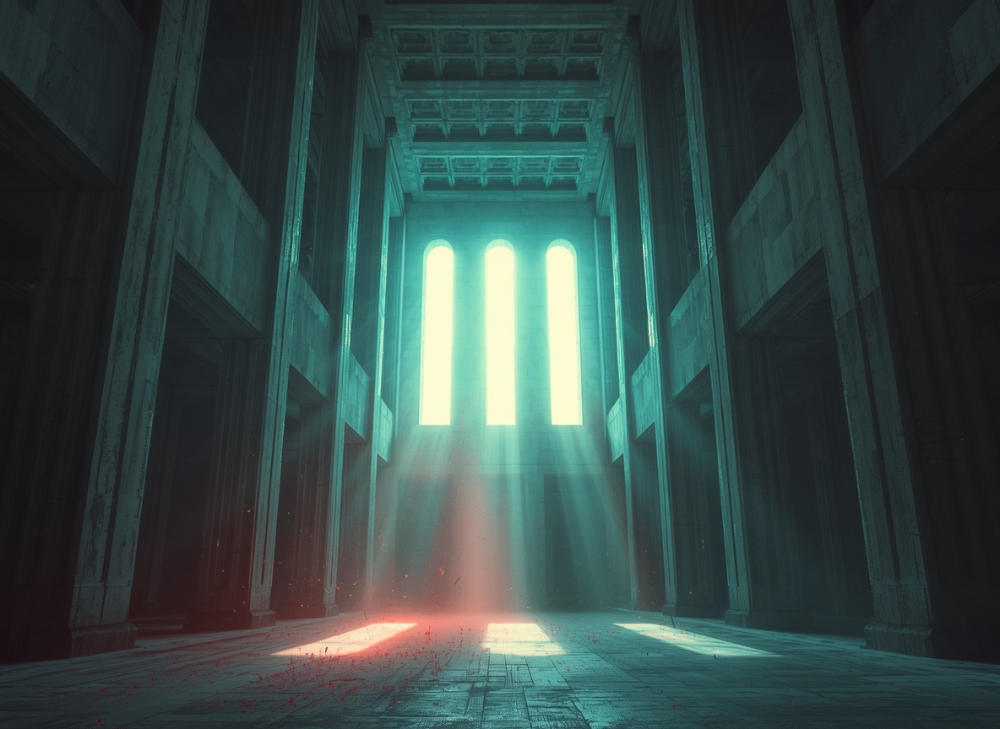
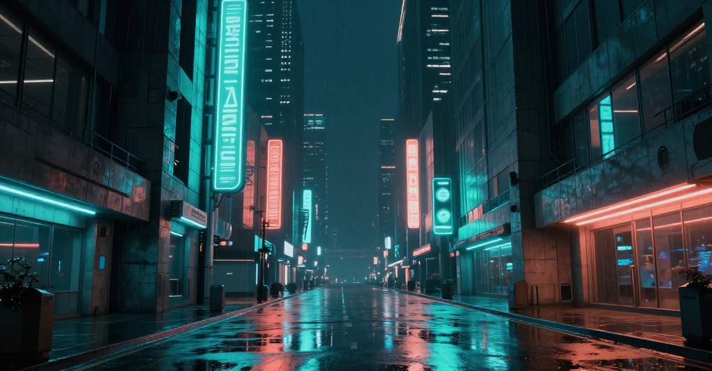
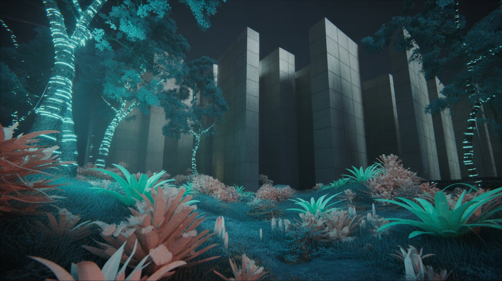
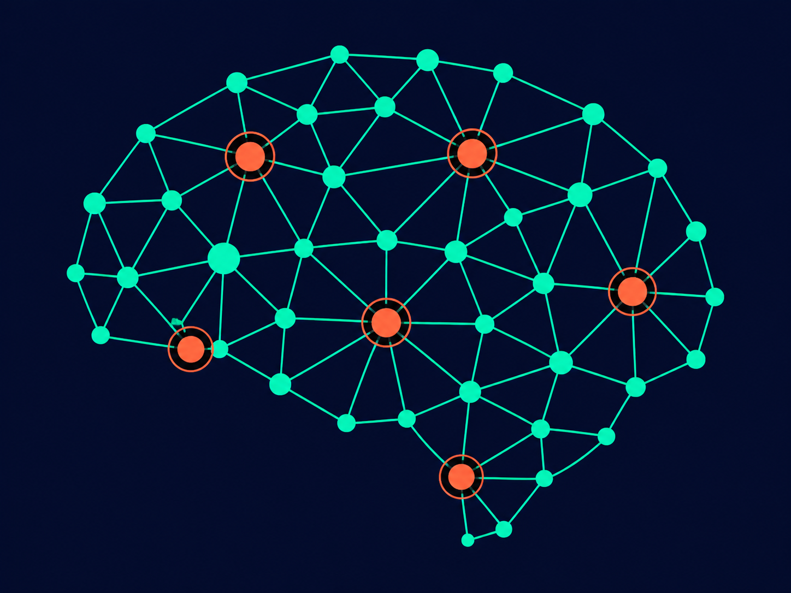
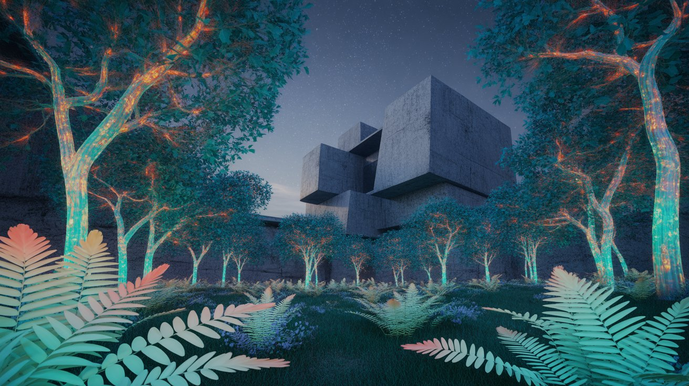
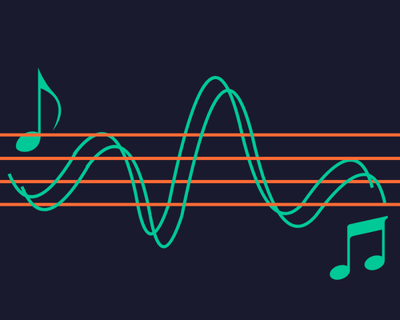
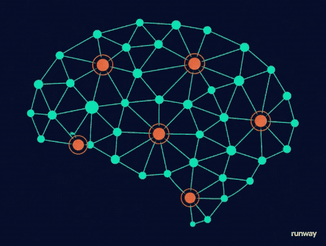

Sample Outputs
⚠ All content below is AI-generated and labeled as such per course report requirements.




Exploring how machines create images, audio, and video; and what it means for multimedia.
EXPLOREGenerative AI refers to artificial intelligence systems trained to produce new content; images, audio, video, text by learning patterns from vast datasets. Unlike traditional AI that classifies or predicts, generative models create.

Modern generative models use diffusion processes, transformers, or adversarial training to convert simple text descriptions into rich multimedia content at resolutions and quality levels once requiring professional artists.

Models like DALL·E and Midjourney create photorealistic or artistic images from text prompts. Diffusion models iteratively denoise random noise into coherent, detailed visuals guided by the prompt.

Tools like Suno AI and ElevenLabs synthesize music, speech, and sound effects. Models learn timbre, rhythm, pitch, and harmony from large audio datasets, producing full songs from a single sentence.

Runway ML and Sora extend image generation across time; synthesizing coherent motion, scene transitions, and narrative sequences from text descriptions or reference images.
⚠ All content below is AI-generated and labeled as such per course report requirements.



Discord-based image generator producing highly artistic and photorealistic images via diffusion models. Known for aesthetic quality and stylistic richness.
OpenAI's image model, integrated with ChatGPT, known for strong prompt adherence and coherent text rendering within generated images.
Open-source diffusion model enabling local generation with full customization, fine-tuning, and a massive ecosystem of community models.
Generates complete songs with vocals, instruments, and lyrics from a short text description. Produces radio-quality music in seconds.
Produces highly realistic AI voices and speech synthesis, including voice cloning from short audio samples with emotional control.
Text-to-video and image-to-video generation platform used by professional filmmakers. Supports motion brush, camera control, and scene extension.